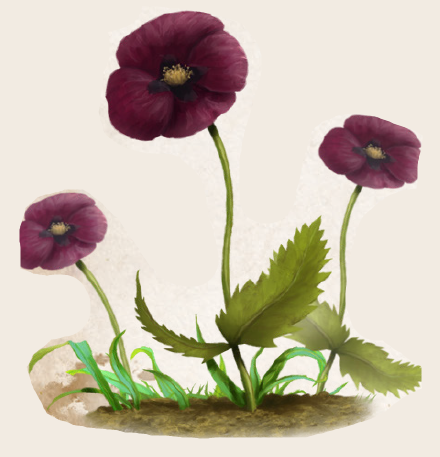

Schwarzer Mohn (Boronmohn) ist eine boronheilige Pflanze. Einerseits, weil alle Teile der Pflanze genutzt werden können, um Schlaf zu finden. Andererseits gedeiht sie nur an einem bekannten Ort auf Dere und zwar nahe den Ruinen der Stadt Palakar auf der Zyklopeninsel Pailos, wo die ketzerischen Nemekathäer Boron innig verehrten. Einem Überbleibsel ihrer Hingabe gleicht der zwischen den Ruinen sehr häufige Schwarze Mohn. Alle Versuche, ihn an anderen Orten zu kultivieren, sind bislang gescheitert. Die Wuchsform des Schwarzen Mohns unterscheidet sich deutlich von anderen Mohnarten. Stets wächst nur ein einzelner blütentragender Stängel aus dem Boden und reckt sich ohne Verzweigung etwa einen halben Schritt empor. Seine wenigen Laubblätter erinnern an schmale, am Rand gesägte Nesselblätter von dunkelgrüner Farbe. Blütezeit des Boronmohns ist von Efferd bis Boron und damit vergleichsweise spät. Vier hauchzarte dunkelviolette bis schwarze Blütenblätter umstehen den runden Mohnkopf. Dieser enthält die heilkräftigen Samen und steht im Boronmond, wenn alle Blütenblätter abgefallen sind, nackt an der Spitze des Stängels.
Blätter und Samen zu verbrennen und den „Schwarzen Weihrauch“ zu inhalieren, ist eine sichere Methode, um aus einem Ruhezustand schnell in Schlaf zu fallen. Selbst am Folgetag ist der Betroffene noch von innerer Ruhe erfüllt. Ein Tee aus Samen und Blättern ruft besonders tiefen, meist traumlosen, Schlaf hervor, weswegen Seelenheilkundige - vor allem Boronis - ihn gerne einsetzen. Auch wenn es die Boronkirche nicht gerne sieht, wird dieser Mohn auch außerhalb des Kircheneinflusses für die Herstellung von Schlaftrunk und -gift genutzt.
Alternative Namen: Boronmohn, Zyklopäischer Mohn
Verbreitung:
Landschaftstyp: Grasländer, Heiden und Steppen
Regionen: Südliche Grasländer und Steppen (überall nahe den Ruinen der Stadt Palakar gewöhnlich, auf ganz Pailos gelegentlich, sonst nirgends, Kultivierung bisher vergeblich)
Suchschwierigkeit: -4
Bestimmungsschwierigkeit: -1
Anwendungen: 1/1/2/2/3/3
Wirkung:
Roh:
Berührung: keine
Einatmung: 1 Stufe Betäubung für 1 Stunde (verbrannte Samenkapsel)
Verzehr: keine
Verarbeitet: siehe Rezepte
Preis: 10 / 15 Silbertaler
Rezepte:
Pflanzliche Rauschmittel: Schwarzer Weihrauch
Elixiere: Schlaftrunk
Alchimistische Gifte: Schlafgift
Alltagsarzneien und Volksbrauchtum:
Es gibt verschiedene Theorien darüber, warum der schwarze Mohn nur in der Nähe der ehemaligen Heimat des großen Kirchenspalters Nemekath gedeiht.
Manche Anhänger des Puniner Ritus gehen dabei soweit, zu behaupten, Boron selbst habe versucht, mit der Pflanze den Wahn Nemekaths und seiner Anhänger einzudämmen, um eine Spaltung der Kirche zu verhindern.
Anhänger des Al`Anfaner Ritus sehen umgekehrt die Ergebnisse der Meditationen im schwarzen Weihrauch als höchst gottgefällige Erkenntnis, welche sich folgerichtig auszahlte.
Manche Borongeweihte basteln Rasselbänder aus den Samenkapseln, indem sie einige Stängel zu Arm- oder Beinbändern zusammenflechten.
Zur Mahnung werden diese getragen, um sich die Spaltung vor Boron bewusst zu halten, auf dass die heilige Stille nicht eintrete, bevor wieder eine Einheit erreicht sei.
Haltbarkeit:
Roh: siehe Haltbarmachung